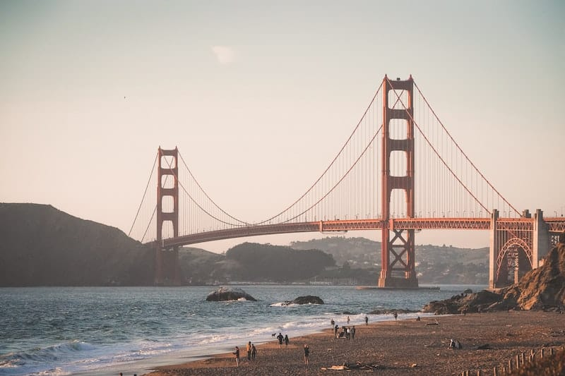

San Francisco
Pur occupando una superficie inferiore a 130 chilometri quadrati e con una popolazione che non arriva neanche al milione, San Francisco è considerata una delle maggiori città del mondo. Famosa per le grandi case in stile vittoriano, i suoi cable car, la sua accettazione del diverso, il bel lungomare e il famoso ponte rosso, alla “City by the Bay” non manca veramente nulla. La sua cucina di eccellenza va dai ristoranti con stelle Michelin in abbondanza agli incredibili “food truck”, autentiche cucine a quattro ruote, e poi musica sinfonica, danza, teatro e opera di livello mondiale ma anche infinite possibilità di avventure all’aria aperta: San Francisco emerge giustamente come una delle mete imperdibili nella lista dei desideri di tutti i viaggiatori.
La parte più difficile potrebbe essere decidere dove andare prima. (Beh, quello e cosa mettere in valigia per visitare quella che è nota come la città dal meteo più imprevedibile.) Il Golden Gate Bridge Park è uno dei luoghi più iconici in città e ha viste spettacolari; da qui percorrete a piedi o in bicicletta il ponte fino a Marin Headlands. Oppure state sul lato di San Francisco e passeggiate fino al San Francisco Palace of Fine Arts, il Presidio o Lands End, un parco frastagliato, spazzato dal vento dove potete guardare le balene e osservare i resti dei Sutro Baths. Il Fisherman’s Wharf richiama i turisti con la sua atmosfera marinaia e gli straordinari ristoranti di pesce; volgete lo sguardo all’oceano e vedrete un’altra affascinante destinazione da non perdere, l’isola di Alcatraz. Le movimentate piazze di Union Square e Ghirardelli Square offrono possibilità di shopping e altri ottimi ristoranti. Il patchwork di quartieri distinti presenti in città, Mission District, Chinatown, North Beach, Haight-Ashbury, Nob Hill e tanti altri, offre infiniti diversivi, dal mattino alla sera. Continuate a leggere per sapere che cosa fare in questa città bellissima, storica e assolutamente affascinante.
GOLDEN GATE BRIDGE Ammirate lo splendido ponte attraversando una delle baie più famose al mondo
Con le torri che si ergono per 227 metri di altezza, la sua campata arcuata proprio all’ingresso della baia di San Francisco e il suo acceso colore arancio-rosso, il Golden Gate Bridge è, in una sola parola, fantastico. Il passaggio a piedi attraverso il ponte è piuttosto semplice (e gratuito) ed è possibile esplorare il Golden Gate Bridge Welcome Center, che aggiunge un tocco di colore alla storia del ponte, come anche l’originale “test tower” alta quasi 4 metri, utilizzata nel 1933. Se vi state domandando per quale motivo un ponte che si chiama “Golden Gate” sia rosso e non dorato, ecco la spiegazione. La leggenda narra che l’imboccatura della baia di San Francisco, l’angusto tratto di oceano su cui si sviluppa il ponte, venne battezzata Chrysopylae (termine greco per “porta d’oro”) da uno dei primi esploratori dell’area, John C. Fremont. Pare che il capitano Fremont abbia ravvisato una somiglianza tra questo stretto e quello che a Istanbul è chiamato Chrysoceras, ovvero “corno d’oro”. Dunque sembra possibile che il ponte sia stato battezzato secondo il tratto d’acqua che attraversa. Ma perché è stato dipinto di rosso? Diciamo che si è trattato di una sorpresa. Quando venne installato per la prima volta, l’acciaio del ponte era coperto solo da una vernice rossa. Quel colore piacque a uno degli ingegneri che partecipavano alla sua costruzione ed egli suggerì di mantenerlo e contribuì a mettere a punto il colore definitivo della vernice per il ponte.
“Il Golden Gate Bridge è, in una sola parola, fantastico”.Tecnicamente il colore è l’“arancione internazionale” ma, a prescindere dal nome, non potrete fare a meno di notarlo qualunque sia il mezzo con cui attraversate il ponte, in auto, a piedi o in bicicletta, lungo la campata di 2,7 km. Ricordatevi che il ponte può essere freddo e ventoso, soprattutto quando c’è nebbia (un avvenimento comune in estate), per cui vestitevi a strati e portate un cappello o una felpa con il cappuccio per tenere al caldo la testa. Ci sono numerose aziende che noleggiano biciclette (due delle più popolari sono Blazing Saddles e San Francisco Bicycle Rentals); molte bici sono munite di mappe stradali dettagliate che vi mostrano il tragitto da San Francisco, attraverso il ponte, verso meravigliose città come Sausalito e Tiburon, nella vicina Marin County. Per un’esperienza davvero particolare potete prendere il traghetto per tornare in città. 
All’estremità sud del ponte potete trovare un bel negozio di souvenir, un caffè e percorsi che vi conducono a sud verso lo storico Fort Point, terminato nel 1861 come avamposto militare per la protezione dell’imboccatura della baia, molto prima che sorgesse il ponte. Alzate lo sguardo verso l’alto per ammirare la struttura del ponte nelle sue parti sottostanti, una spettacolare rete di travi imponenti, enormi colonne e cavi impressionanti.